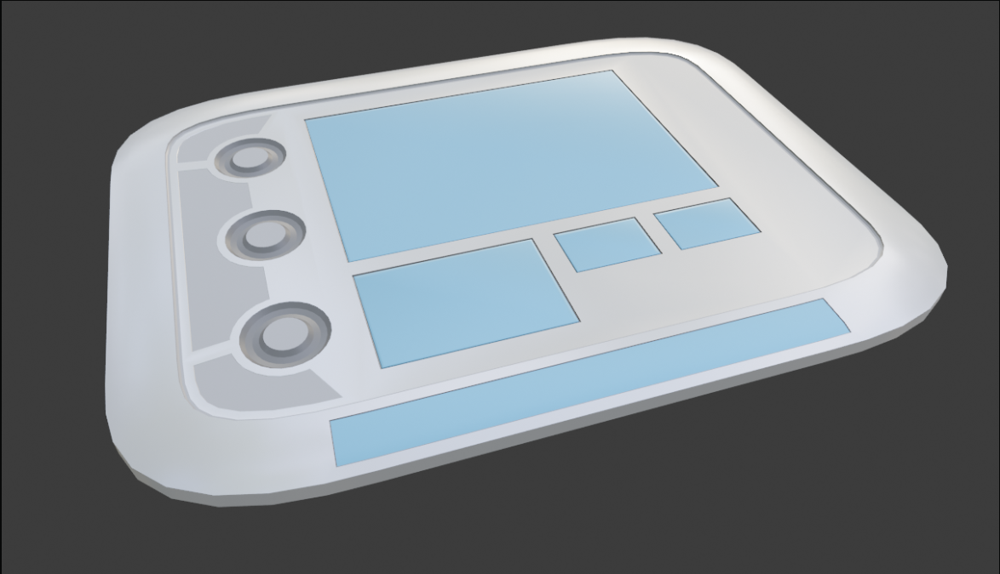
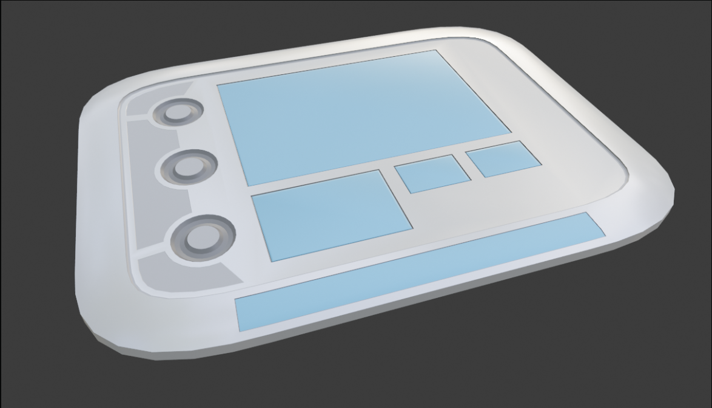
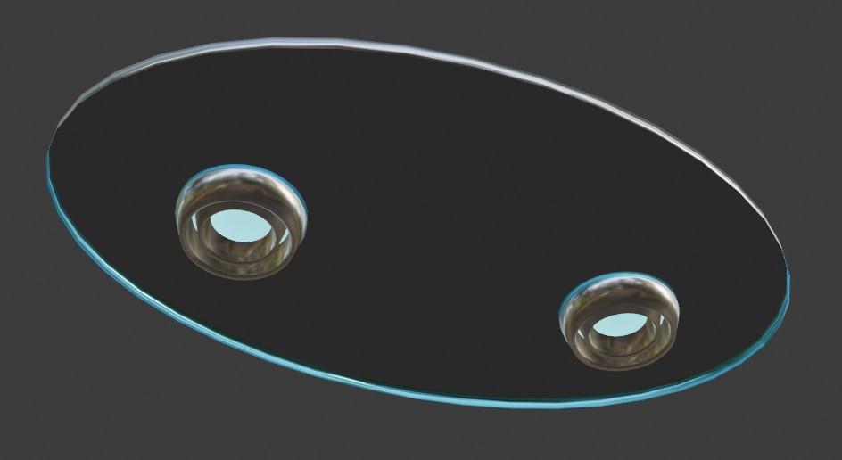
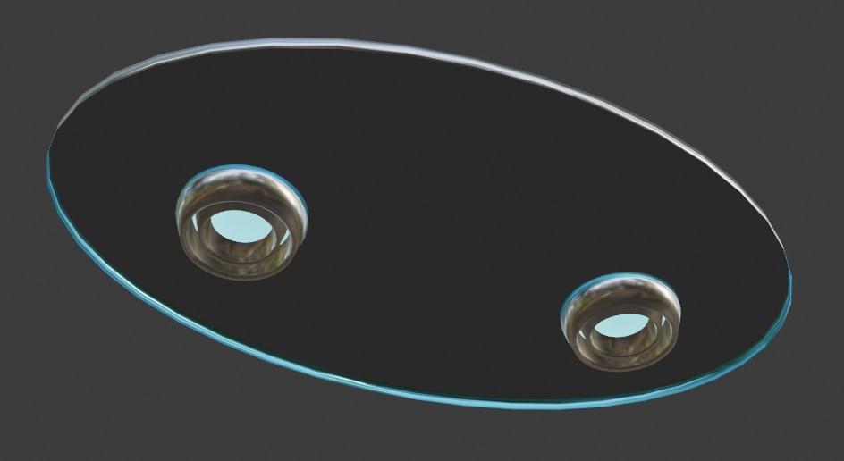
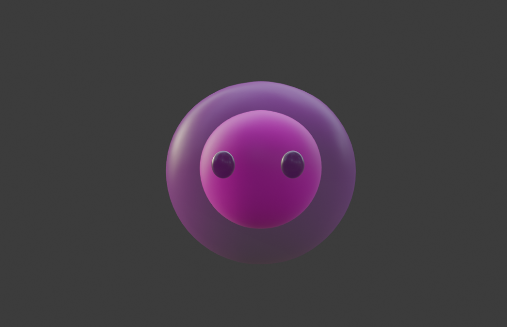
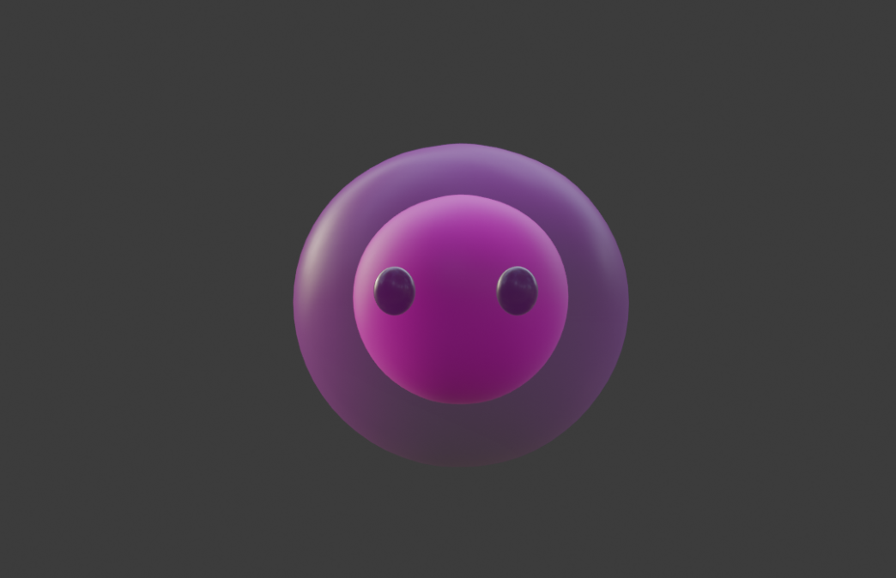

Nous avons implémenté de nouveaux mouvements (basés sur les axes (x,y,z)) qui permettent un déplacement libre dans tout le vaisseau.
Nous avons également créer une "hitbox" (partie physique du vaisseau) afin que les objets et les joueurs ne dérivent pas dans le vide intersidérale !
L'ajout des portes a été également effectué, elle sont animées et synchronisées avec un son distinctifs. Elles s'ouvrent automatiquement au passage des joueurs et normalement ne les écrasent pas s'ils restent en dessous !
Chaque salle à un texte d'introduction associé et est récité par Unity-39 (notre IA) à la première arrivée dans la dite salle !
Le réseau est terminé, il est fonctionnel. Il n'y a donc pas de nouveauté de ce côté !
L'IA à reçu une petite mise à jour et ne se prend plus les murs !
Et suis maintenant les joueurs sans soucis !
Cette tâche consiste à modélisés tous les objets du jeu. Ils seront évidemment interactifs avec l’environnement et feront partie des énigmes.
.PNG)
.PNG)
.PNG)
 



 

Nous avons, durant cette soutenance réalisé l'entièreté de l'intérieur du vaisseau.
Il est basé sur un axe principale et a deux sections. La première section située en haut du vaisseau est une zone de vie avec les chambres, la salle de repos...
Tandis que la seconde section, située en bas, est une zone de travail avec notamment le laboratoire, la salle de navigation et l'Alienarium.


De ce côté, nous avons mis à jour la combinaison car elle avait quelques problèmes lors de son implémentation dans le projet.
Nous avons également réalisé l'apparence de notre alien blob ainsi que son animation.

 

Pour le son nous nous sommes focalisés sur l'implémentation des bruitages et des voice line de l'IA, dans le but d'avoir une ambiance plus réaliste et agréable à écouter.